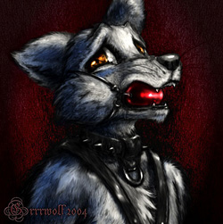

Artwork Categories:
|
|  |
A.k.a.: Grrr, Grrrpup, Grrrpuppy Occupation: Artist, and a full time job Current Home: An apartment in Washington, USA Species: Where Wolf Age: 26 Sex: Male Sex Orientation: Bi Piercings: none (yet) Height: 5' 7.5" Weight: 160-170 lbs (and slimming!) Eyes: Copper Hair: Copper/Brownish Fur: Silver blue/pale blue/creamy white/copper |
Favorite Authors: Robert Jordan, David Eddings, Anne Rice, Star Wars novels...
Favorite Music: Techno
Favorite Band of All Time: U2
Favorite Time Periods: The Renaissance, the Age of Pirates, neo-space age
Favorite Movies: Empire Strikes Back, The 5th Element, Titan A.E., Cutthroat Island, Willow, Goonies, Ferris Bueller's Day Off, Monty Python and the Holy Grail, Pirates of the Carribean
Favorite Pastimes: Being with my mate, relaxing, composing techno, researching and learning about sex and aspects of sex (like what BDSM is really about), sex/masturbation, reading
Favorite Foods: Italian, cherry coke, cheesecake, subs, chicken chow mein, hawaiian punch, macaroni & cheese, and really good pizza
Pet Peeves: Stupid, stupid drivers, upstairs neighbors, car alarms, spam, vehicles that are an extention of the penis, slow interent connections, having to go to bed early, only having two arms, myself
Goals: To manage time better, draw faster and more efficiently, mature
I spent a lot of my childhood doing normal type of things, but also included drawing a lot. My biggest influence without a doubt was Disney's Robin Hood. Seeing Fox and the Hound was also a heavy influence in my childhood. In high school, I would spend my time with the VCR on pause drawing Tiny Toons or Animaniacs. I was sorta known as "that guy who could draw", did a lot of contests, things like that, but also found myself doing a lot of projects for everyone else.
From Jr. High and High School, I would suddenly have friends when it was convient for when they needed a visual aide for a project, book report, whatever. I had a lot of friends, but no one in particular. Granted, there are always exceptions, but when I look back, that's what I remember.
By my senior year, my art teacher of four years took me outsite the class and ripped me up one side to the other, saying I wasn't going to amount to anything, that even the freeshmen were doing better than I was - that if my talent was a freeway, I was in the slow lane and everyone was passing me by. I was devistated and crushed beyond all means...
In college, things started to unfold for me in so many ways both positively and negatively. I took every art class concieveable. Figure drawing, graphic design, computer illustration, art history, anything I could. I loved art history, especially the artists of the Renaissance - how they could just bring paintings to life. The color, the shadows, the emotion of it all moved me.
It's really difficult to describe, but I clutched onto my artwork so tightly until I finally felt rejected by it. Meaning, the way that I would do my art, and the way my instructors told me how I should do it, finally pushed me too far.
I left my art behind, and filled that hole up with other things. I started a band and became a videographer. After a year or two, I pushed that away after being taken for granted in so many ways, and became nothing...
That is, until I played Darkstalkers. There was just something about it, something about Talbain, and something about Felicia. I never really watched anime a whole lot, but I started, and loved it. I was creatively teased and aroused by all the differet kinds of styles and worlds and characters there were. I also had my first taste of the internet...
I began spending hours looking up anime sites and by following link after link after link I ran into (what I'm pretty sure of what I know now is the site Side 7) a website that offered a choice of "Anime" or "Furry". I had no clue what that (meaning "Furry") was, so I clicked in.
To try and explain things briefly (which I feel that I have already failed at), it was like....Oh...my...godz....So THIS is what I've been all these years?! I ran into another fur when I continued taking art classes again, found out what a fur con was, started meeting more furs, doing artwork again, and it just sotra kept going and going...
There is something very unique about the fandom that I discovered (aside from all it's other uniquenesses), is that for the first time in a long time, I felt appreciated. Not just for my artwork, but for just being there. The feeling of "family" has enveloped me on all levels.
I found, for some reason, that the art classes I took up again were offering me nothing, and I still found the same prejudice and nuances from the professors. Granted, I am always learning, but I felt like I should follow my heart, and doing realistic and emotional furry artwork as one of my goals. It hasn't been all fun and games all of the time, but I've never felt such a belonging, such a satisfaction, as I have had ever in my life from this.
Thank you everyone, for everything.
Gratefully,
Grrrwolf